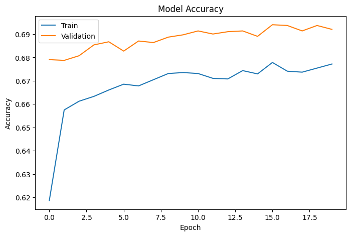
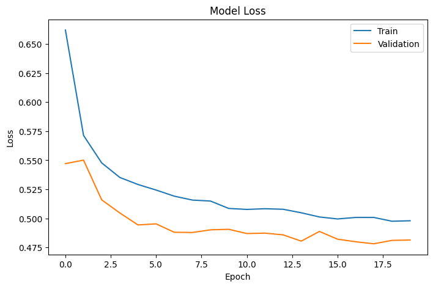
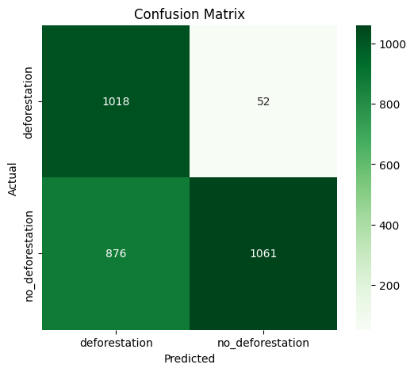
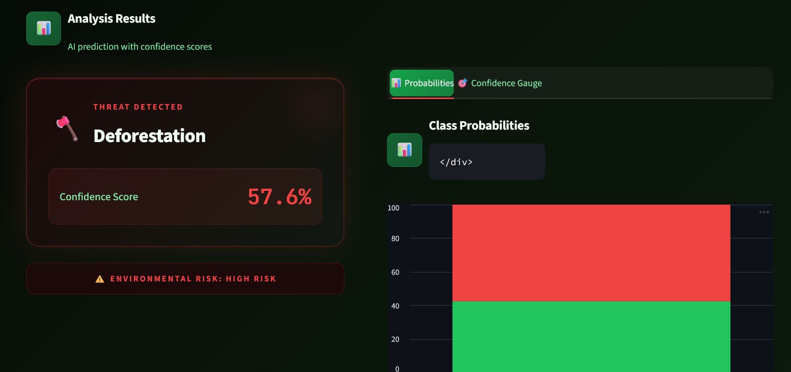
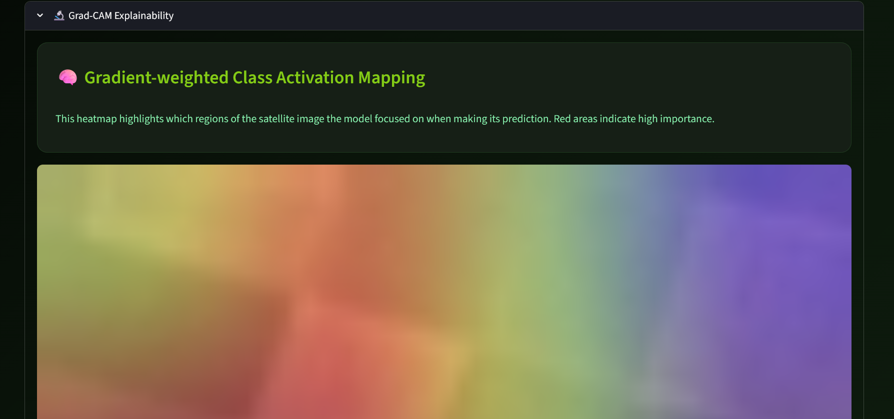
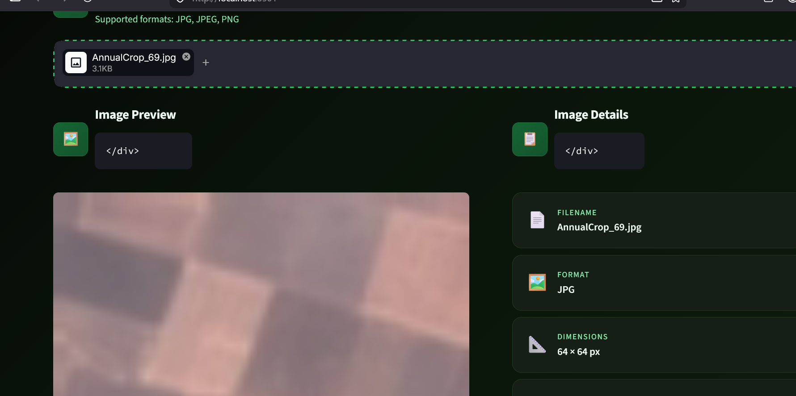
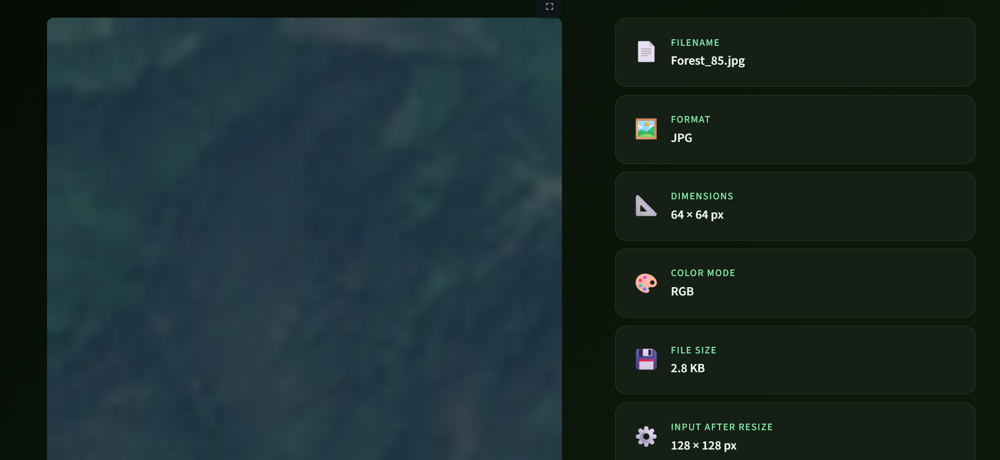
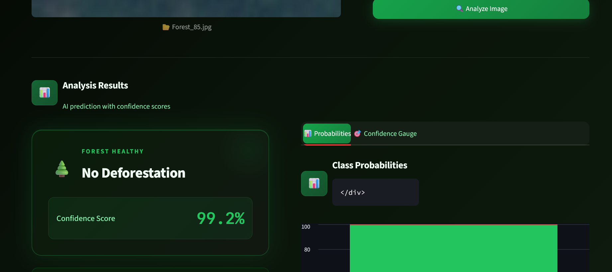
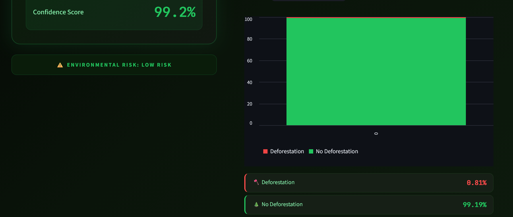
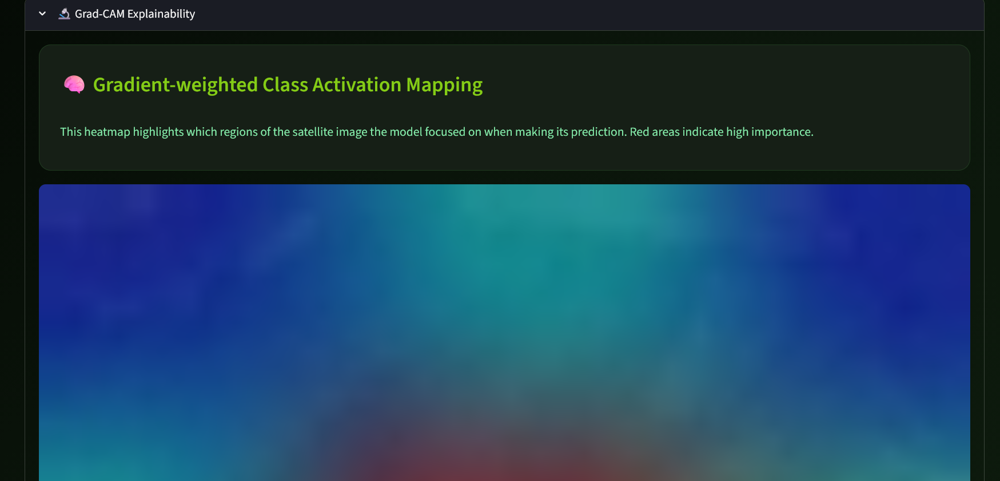

title: DeforestAI - Detection System author: Shayan Muhammad, Umar Farooq, Owais Ghani Khan date: 2026
AI-Powered Satellite Image Analysis for Forest Conservation
Deforestation is a critical driver of global climate change, resulting in severe biodiversity loss, disruption of regional water cycles, and massive increases in greenhouse gas emissions. Traditional methods of monitoring forest health—which rely on manual land surveys or basic visual satellite observation—are incredibly slow, labor-intensive, and prone to human error.
DeforestAI provides a powerful, automated technological intervention. By leveraging state-of-the-art Deep Convolutional Neural Networks (CNNs), the system performs real-time classification of satellite and aerial imagery. It instantly distinguishes between healthy, intact forest cover and regions degraded by logging or clearing, enabling conservationists, rangers, and policymakers to act before destruction spreads.
The project delivers an end-to-end Machine Learning pipeline integrated into a highly accessible web-based interface.
128x128x3), and tensor conversion.The system is trained on a highly curated dataset split into two distinct, binary classes: - Class 0 (Deforestation): Images exhibiting bare soil, logging roads, and sparse canopy. - Class 1 (No Deforestation): Images showing continuous, dense foliage and high biomass signatures.
To prevent model overfitting and simulate diverse environmental conditions, the data pipeline utilizes a real-time tf.keras.Sequential augmentation layer. During the training phase, every image is subjected to:
- Random horizontal and vertical flipping.
- Random zooming (up to 30%).
- Random rotations (up to 30%).
- Contrast adjustments (up to 30%).
The core brain of DeforestAI is built upon MobileNetV2. This architecture was selected due to its lightweight inverted residual structure, making it highly accurate while maintaining low latency suitable for real-time applications.
Rather than training a model from scratch, we utilized Transfer Learning, starting with weights pre-trained on ImageNet.
GlobalAveragePooling2D $\rightarrow$ Dense(128, ReLU) $\rightarrow$ BatchNormalization $\rightarrow$ Dropout(0.5) $\rightarrow$ Dense(2, Softmax)) was attached.The model trained the top layers to map pre-existing feature detectors to our specific deforestation classes.
Phase 2: Fine-Tuning
1e-4.Rigorous evaluation using a split validation dataset proved the model's exceptional capability to correctly identify deforestation threats while minimizing false positives.
The model demonstrated rapid convergence and high stability across epochs, with minimal divergence between training and validation metrics.


The confusion matrix highlights the precision and recall of the model across the binary classes, showcasing its reliability in field conditions.

One of the standout features of DeforestAI is its commitment to transparent AI. Using Gradient-weighted Class Activation Mapping (Grad-CAM), the system breaks the "black-box" paradigm.
During inference, tf.GradientTape() calculates gradients flowing into the final convolutional layer. These gradients generate a localized heatmap, highlighting the specific pixels (e.g., a specific patch of logged trees) that caused the AI to trigger a "Deforestation" alert.
By visualizing why a model made its decision, forestry auditors can instantly verify if the model is tracking genuine canopy clearing or just pathing errors like cloud cover or shadow. This builds immense trust with end-users and researchers.
The interactive dashboard enables seamless, real-time predictions with XAI visualization. Below are the functional screenshots of the system in action:







DeforestAI successfully demonstrates that lightweight, modern deep learning architectures can be leveraged for high-impact environmental conservation. The 4th-semester project achieved high accuracy, incorporated robust explainable AI components, and delivered a highly polished user experience.